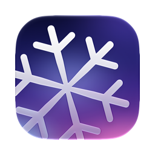

Opens go/ links instead of searching for them.
Chrome sends go/standup to your search engine. Let It Go catches it and opens http://go/standup instead.
Daily standup
Links go to http://go by default. Point them anywhere from the toolbar.
Light, private and out of the way.
Catches go/ searches on
go/docs/onboarding and go/q?id=42 open just like go/docs, with every path and query kept.
No analytics, no accounts. Other searches are left alone, and your setting stays in your browser.
Opens go/ links
Opens go/ links instead of searching for them.
Daily standup